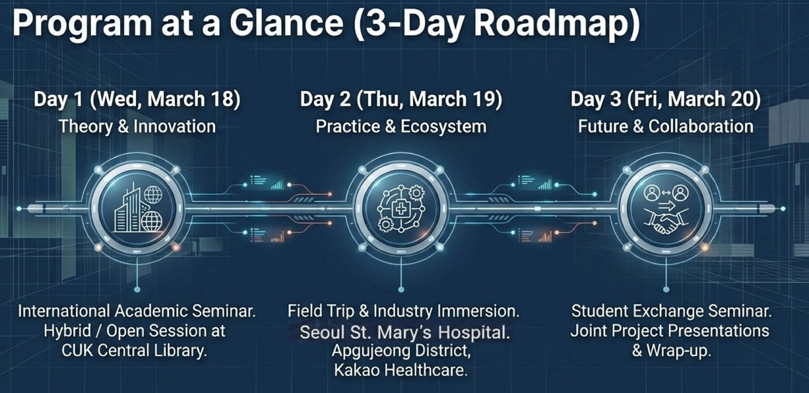
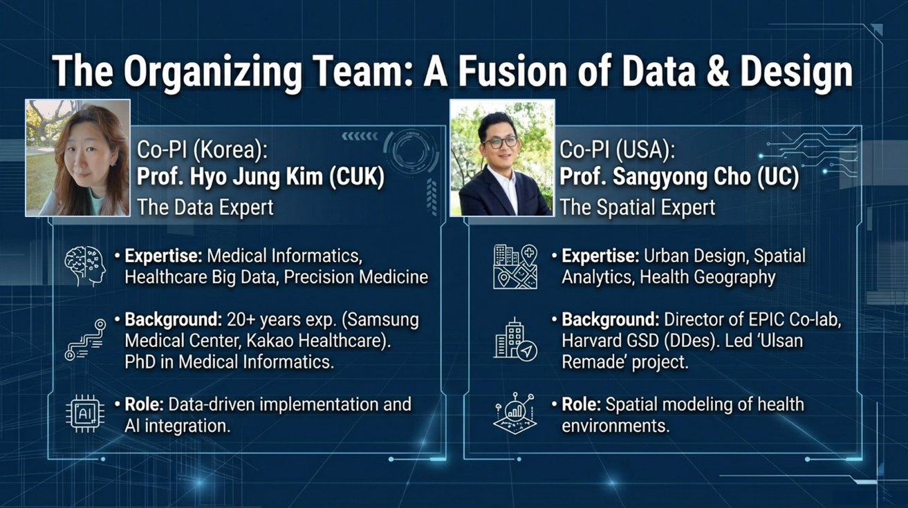

2026. 3. 18(수) ~ 3. 20(금) | 가톨릭대학교 성심교정 베리타스관 · 성의교정 옴니버스파크
주최: 가톨릭대학교 바이오메디컬소프트웨어학과 (PHI Lab) · 신시내티대학교 DAAP (EPIC-Co Lab) | 후원: 한국연구재단 (NRF)
Global Healthcare Mobility Week는 글로벌 헬스케어 분야의 학술 교류와 현장 탐방을 통해 미래 의료 인재들의 역량을 강화하는 국제 행사입니다. 학술 컨퍼런스, 헬스케어 기업 현장 방문, 학생 연구 교류 세션 등 다양한 프로그램으로 구성되어 있습니다.

